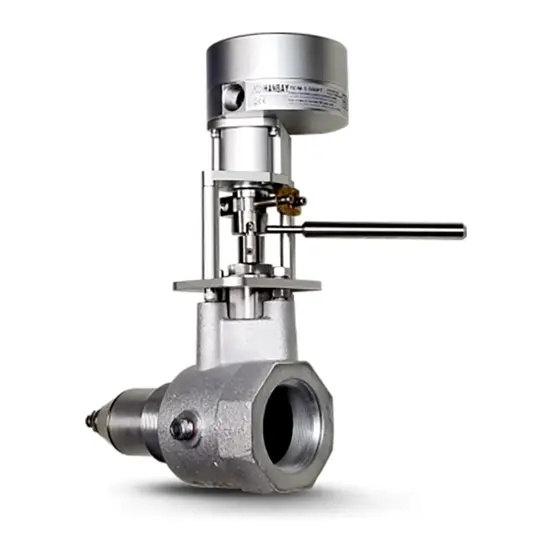

Hanbay M và R Range là actuator điện compact của Rotork cho van công nghiệp dưới 4 inch như van kim, van metering, van cầu, van bi và van bướm. M Range dùng vỏ nhôm tiêu chuẩn cho không gian hạn chế; R Range dùng vỏ explosionproof cho khu vực nguy hiểm. Bài viết giải thích cách đọc product code và torque theo từng gear stage, dựa đúng theo tài liệu brochure hiện hành — không áp dụng cách đọc này cho các dòng Hanbay khác.

Trả lời nhanh
- M Range: vỏ nhôm IP66 tiêu chuẩn, không có chứng nhận Ex; R Range: vỏ explosionproof IP66/67 (IP68 bản Bắc Mỹ), chứng nhận Class I/II Div 1, ATEX, IECEx.
- Torque theo gear stage: L (7,9–9,3 Nm), M (24–28 Nm), H (48–60 Nm), F (80–118 Nm) cho model quarter/half-turn (MDx/RDx).
- Model multi-turn (MCx/RCx) có 5 mức: J (0,5–1,8 Nm), L (1,3–5,4 Nm), M (4–16 Nm), H (13–56 Nm), F (26–103 Nm).
- Cả hai có tùy chọn Battery Backup (fail-safe 60 giây) và tín hiệu điều khiển Analog/Modbus/TTL.
- R Range có thêm bản spring-return failsafe (RS/S trong mã) cho ứng dụng cần đóng/mở khi mất điện.
Cấu trúc product code Hanbay M/R
Product code của M/R Range gồm các nhóm: Range (M/R) - Positioning (C=liên tục, D=rời rạc) - Gear stage (J/L/M/H/F, quyết định dải torque) - Special options (AC, B, BS, G, HT, L1-L6, M, P, QS, RS, S...) - Enclosure (0/N/S cho M; B/E cho R) - Wiring - Heaters - PCB (AB/AF/AI/AS/DC/DT/PT) - Mounting. Ví dụ cấu trúc rút gọn: M C M-0-0 5 0 AB-0 (M Range, Continuous, gear Medium, không tùy chọn đặc biệt, vỏ tiêu chuẩn, cáp 20ft TURCK 5 chân, không heater, board Analog, mounting 1" stroke có kit).
Lưu ý quan trọng: cấu trúc mã trên chỉ áp dụng cho Hanbay M và R Range theo đúng brochure PUB193-027. Không áp dụng mẫu này để suy đoán mã của Hanbay L Range (linear adaptation), actuator cho gate valve, hoặc các dòng Hanbay khác — mỗi dòng có tài liệu giải mã riêng.
Bảng torque theo gear stage
Model multi-turn (MCx / RCx)
| Gear stage | Torque (Nm) | Tốc độ (giây/1 vòng) |
|---|---|---|
| J (rất thấp) | 0,5–1,8 | 1–7* |
| L (thấp) | 1,3–5,4 | 1–7 |
| M (trung bình) | 4–16 | 4–23 |
| H (cao) | 13–56 | 18–90 |
| F (cao nhất) | 26–103 | 38–186 |
* Giảm duty cycle xuống 25% ở mức torque cao nhất của gear J.
Model quarter/half-turn (MDx / RDx)
| Gear stage | Torque (Nm) | Tốc độ (giây/1/4 vòng) |
|---|---|---|
| L (thấp) | 7,9–9,3 | 1–3 |
| M (trung bình) | 24–28 | 1–3 |
| H (cao) | 48–60 | 3–9 |
| F (cao nhất) | 80–118 | 5–15 |
Torque và tốc độ giống nhau giữa M Range và R Range ở cùng gear stage; khác biệt là vỏ và chứng nhận Ex. Tốc độ thực tế còn phụ thuộc cấu hình DIP switch bên trong actuator — cần tham khảo user manual của từng unit cụ thể.
Tiêu chí chọn Hanbay M hoặc R
- Khu vực lắp đặt: khu vực không nguy hiểm dùng M Range; khu vực nguy hiểm (Class I/II Div 1, ATEX/IECEx) dùng R Range.
- Torque yêu cầu: đối chiếu torque van với gear stage phù hợp (J/L/M/H/F cho multi-turn; L/M/H/F cho quarter/half-turn).
- Loại chuyển động: multi-turn (van kim, van metering) chọn MCx/RCx; quarter/half-turn (van bi, van bướm) chọn MDx/RDx.
- Yêu cầu fail-safe: nếu cần đóng/mở khi mất điện, xem xét R Range bản spring-return (RS/S) hoặc tùy chọn Battery Backup (cả M và R, fail-safe 60 giây, không dùng để vận hành thường xuyên).
- Tín hiệu điều khiển: xác nhận board phù hợp: Analog (AB/AF/AI), Modbus (AS) hoặc TTL (DC/DT).
- Lắp đặt cơ khí: xác nhận mounting code (0-B) tương ứng với loại kết nối van và stroke cần thiết.
Model và range liên quan
| Model/range | Lý do liên quan | Trang sản phẩm |
|---|---|---|
| Hanbay M Range | Actuator compact tiêu chuẩn, khu vực không nguy hiểm | Hanbay M Range |
| Hanbay R Range | Actuator compact explosionproof, khu vực nguy hiểm | Hanbay R Range |
| ELC | Lựa chọn actuator tuyến tính điện khác nếu van lớn hơn phạm vi Hanbay (dưới 4 inch) | ELC actuator Rotork |
Mua Hanbay M/R chính hãng tại Việt Nam
Fast Group Engineering là đơn vị cung cấp sản phẩm Rotork chính hãng tại Việt Nam, đầy đủ giấy tờ CO/CQ, catalogue và datasheet theo từng lô hàng. Đội ngũ kỹ thuật hỗ trợ đối chiếu product code Hanbay M/R theo torque, khu vực lắp đặt và tín hiệu điều khiển trước khi báo giá.
Câu hỏi thường gặp
Hanbay M và R Range khác nhau ở đâu?
M Range dùng vỏ nhôm đúc IP66 tiêu chuẩn, phù hợp không gian hạn chế. R Range dùng vỏ explosionproof IP66/67 (IP68 với bản chứng nhận Bắc Mỹ), có chứng nhận Class I/II Division 1, ATEX và IECEx cho khu vực nguy hiểm. Torque theo từng size (J/L/M/H/F) giống nhau giữa hai range.
MDL, MDM, MDH, MDF trong product code Hanbay nghĩa là gì?
Đây là các mức gear stage (cấp bánh răng) cho model quarter/half-turn: MDL (torque 7,9-9,3 Nm), MDM (24-28 Nm), MDH (48-60 Nm), MDF (80-118 Nm) theo bảng performance data trong brochure M/R Range hiện hành. Chữ cái thứ 3 trong mã (L/M/H/F) thể hiện cấp torque, không phải part number đầy đủ.
Có thể áp cách đọc mã M/R Range sang các dòng Hanbay khác không?
Không nên. Cấu trúc product code trong bài chỉ áp dụng cho Hanbay M và R Range theo đúng tài liệu brochure PUB193-027. Các dòng khác trong danh mục Hanbay như L Range (linear adaptation) hoặc actuator cho gate valve có cấu trúc mã riêng, cần tài liệu tương ứng để giải mã, không suy rộng từ mẫu M/R.
R Range có bản spring-return failsafe không?
Có. R Range có bản spring-return failsafe (mã RS hoặc S trong product code), ví dụ RDM cho van nội bộ (internal valve) có torque 15,8 Nm hoặc cho van bi 4,5 Nm, theo bảng performance data trong brochure. Duty cycle của bản failsafe là 25%, thời gian giữ tối đa 30 phút (internal/ESV) hoặc không giới hạn (ball valve).
Cần gửi thông tin gì để chọn đúng Hanbay M hoặc R?
Gửi ảnh nameplate hoặc product code hiện tại (nếu thay thế), torque yêu cầu, loại van, có cần chứng nhận khu vực nguy hiểm hay không, và tín hiệu điều khiển (analog/Modbus/TTL) cho Fast Group Engineering để đối chiếu trước khi báo giá.
Gửi product code hoặc nameplate để chọn đúng Hanbay M/R
Để kiểm tra đúng mã, vui lòng gửi ảnh nameplate/product code hiện tại, torque yêu cầu, khu vực lắp đặt và tín hiệu điều khiển cho Fast Group Engineering qua Zalo/điện thoại (+84) 938 888 958 hoặc email minhduc@fastgroup.vn.
Nguồn tham khảo
- PUB193-027, Hanbay M/R Ranges Brochure — trang 6-7 (specs, performance data, product code M Range), trang 8-9 (specs, performance data, product code R Range), trang 10 (spring-return failsafe R Range), trang 11 (Battery Backup, bảng torque/speed tổng hợp MCx/MDx/RCx/RDx).
Ghi chú nội bộ: bài chưa đối chiếu Hanbay L Range (linear adaptation) và Hanbay Gate Valve (trang 12-13 của PUB193-027) vì brief yêu cầu tập trung M/R — reviewer có thể tách bài riêng cho L Range/Gate Valve nếu cần, dùng đúng mã của từng dòng, không suy rộng từ M/R.